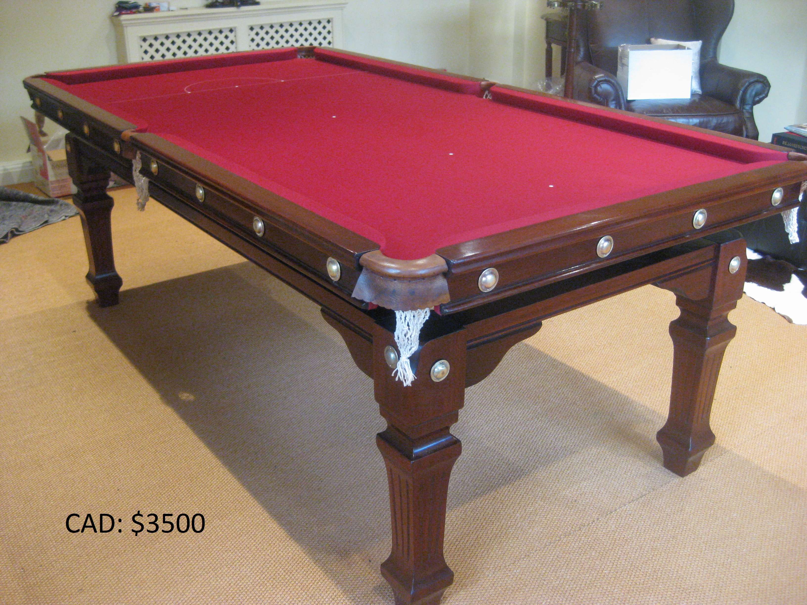
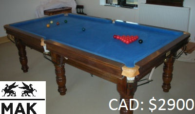
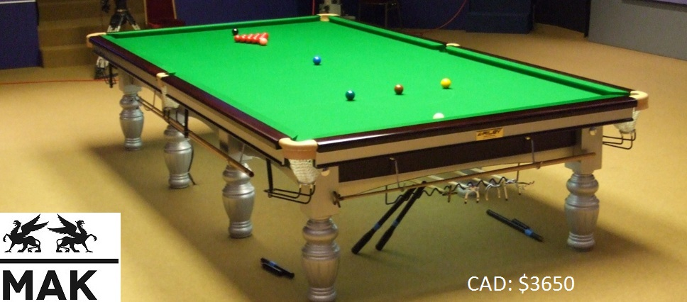
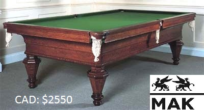
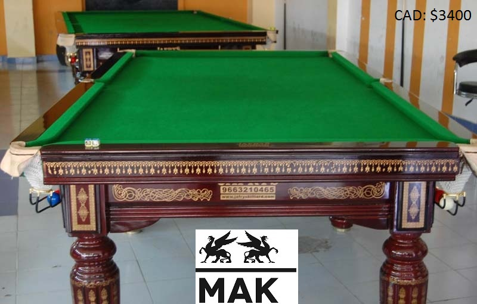

FRENCH TABLES

Oak Hill Billiards 8' french snooker Table
Weights & Dimensions
Slate Length - 6 foot 1.5 inches - 73.5 inches - 187 centimetres
Slate Width - 2 foot 4 and 3/4 inches - 28 and 3/4 inches - 73 centimetres
Slate Depth - 1 and 3/4 inches - 4.5 centimetres
Total Slate Weight - 830 kilograms
Individual Slate Weight - 166 kilograms

Beringer Billiards TBL-2 french snooker Table
Weights & Dimensions
Slate Length - 5 foot 1.5 inches - 61.5 inches - 156 centimetres
Slate Width - 2 foot or 24 inches or 61 centimetres
Slate Depth - 1 and 3/4 inches or 4.5 centimetres
Total Slate Weight - 500 kilograms
Individual Slate Weight - 100 kilograms

Traditional Cedar Log 8' french snooker Table
Weights & Dimensions
Slate Length - 4 foot 7.5 inches - 55.5 inches - 141 centimetres
Slate Width - 1 foot 9.5 inches - 21.5 inches - 55 centimetres
Slate Depth - 1.5 inches - 4 centimetres
Total Slate Weight - 395 kilograms
Individual Slate Weight - 79 kilograms

Boca Billiards 8' french snooker Table
Weights & Dimensions
Slate Length - 7 foot - 84 inches - 213.5 centimetres
Slate Width - 3 foot 6 inches - 42 inches - 107 centimetres
Slate Depth - 3/4 inches - 1.5 inches total depth with wooden underframe calculated
Total Slate Weight - 132 kilograms

Traditional Cedar Log 8' french snooker Table
Weights & Dimensions
Slate Length - 5 foot 1.5 inches - 61.5 inches - 156 centimetres
Slate Width - 2 foot or 24 inches or 61 centimetres
Slate Depth - 1 and 3/4 inches or 4.5 centimetres
Total Slate Weight - 500 kilograms
Individual Slate Weight - 100 kilograms
Snooker in its modern form originated in the latter half of the 19th century.
Billiards had been a popular activity amongst British Army officers stationed in India, and variations
on the more traditional billiard games were devised. One variation, devised in the officers' mess in Jabalpur
during 1874 or 1875,[8] was to add coloured balls in addition to the reds and black which were used for pyramid pool and life pool.